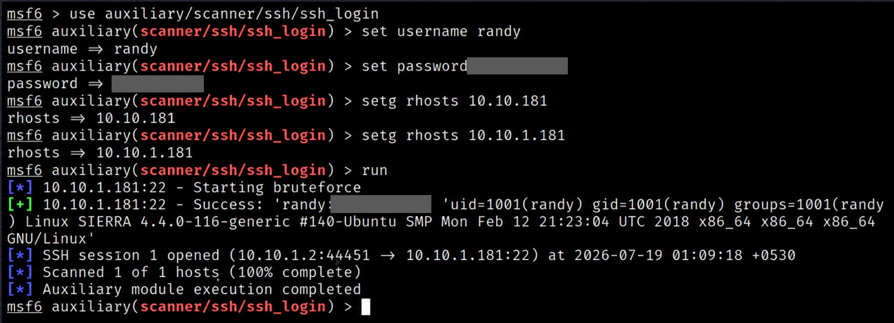
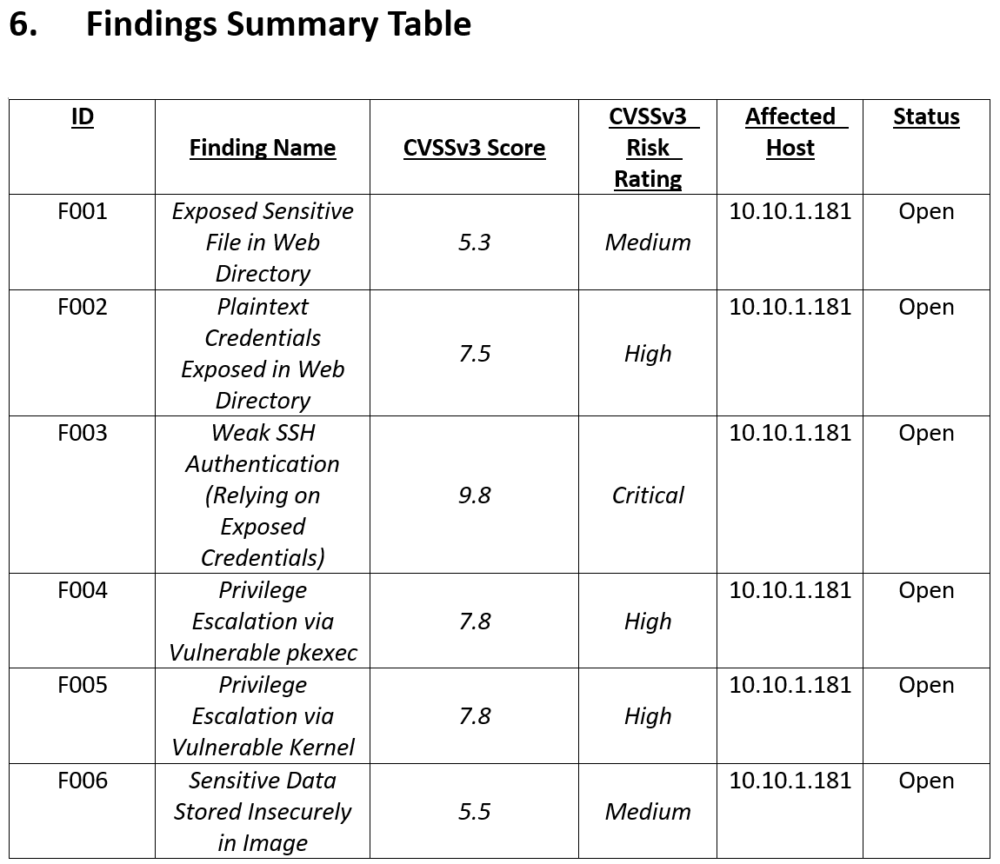
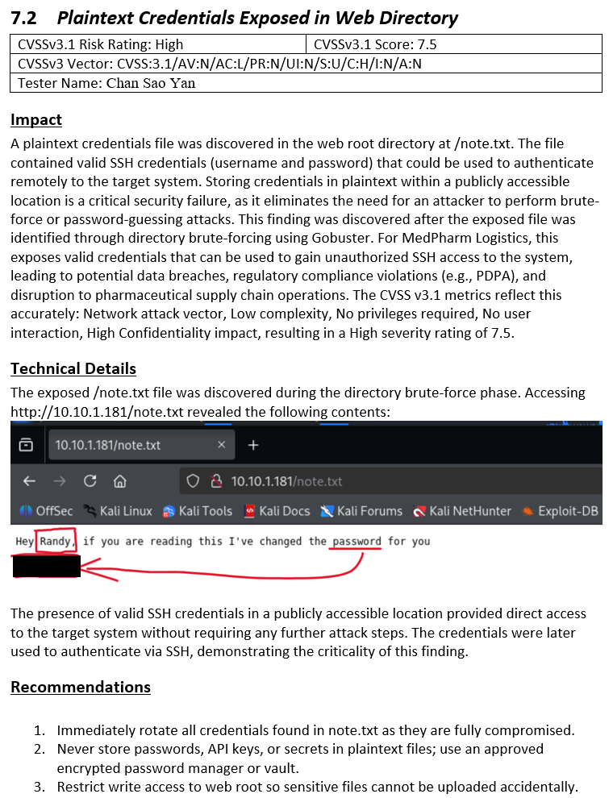

Summary
I conducted a penetration test on a Linux virtual machine in VirtualBox within a controlled lab, using techniques such as SQL injection and password cracking. I benchmarked the target against CIS Benchmarks, pinpointing configuration gaps and proposing hardening measures, and recorded findings, evidence and remediation steps in a full technical report.
How I did it
-
Scan the target
Ran a service scan of the target with Nmap.
[TODO: S7 Nmap service scan (-sV) of the target]Proves: Systematic reconnaissance before testing. -
Log in with the exposed credentials
Used Metasploit’s
ssh_loginmodule with the credentials found in the exposednote.txtfile. The login succeeded and opened an SSH session on the target, confirming finding F003.
Proves: confirming a finding by testing it, following a set procedure. The password is hidden on purpose. -
Test for SQL injection
Intercepted requests in Burp Suite and tested an SQL injection payload.
[TODO: S9 Burp Suite intercepted request with the SQL injection payload (and S10: the page showing the result)]Proves: Web application testing with recorded evidence. -
Crack passwords
Used John the Ripper for password cracking.
[TODO: S11 John the Ripper result, hashes and passwords blurred]Proves: Testing password strength. -
Benchmark and report
Evaluated hardening against CIS Benchmarks and wrote the full report: six findings, each scored with CVSS v3.1, with evidence and remediation steps.

Proves: recording results in a structured format, each finding scored with CVSS v3.1.
Result and what I learnt
The report documented six findings on the target, rated Medium to Critical with CVSS v3.1: an exposed file and plaintext credentials in the web directory, weak SSH authentication, two privilege-escalation paths (a vulnerable pkexec and a vulnerable kernel), and sensitive data stored insecurely. It also identified configuration gaps against CIS Benchmarks, with each test procedure, result and remediation step documented.
This project showed me what it was really testing, and where I stand: what I have understood from class so far, and what I still need to work on. It also pushed me to learn new things quickly and adapt to them, which sharpened my skills.
Evidence
One finding from my report, written up the way a client would receive it: risk rating, impact, technical evidence and recommendations.
